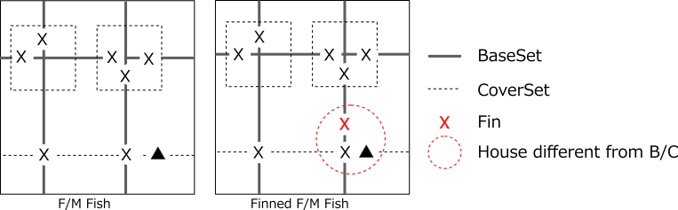
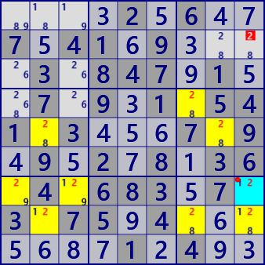
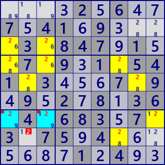
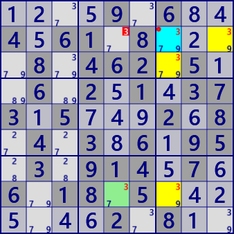
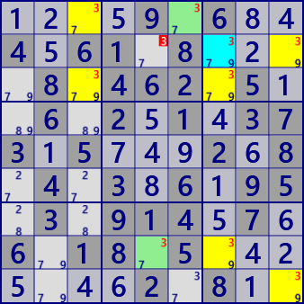
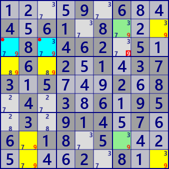

Endo Fins/Cannibalism
Algorithms based on BaseSet and CoverSet can be extended step by step to Fish, Finned Fish, Franken/Mutant Fish. In the definition of these FISHs, "House groups of BaseSet and CoverSet do not overlap" condition. Loosen this condition here.
Endo Fin Fish
Endo Fins Fish is a case where the House group of BaseSet overlaps. It is a Franken/Mutant type where rows, columns, and blocks are mixed because the House groups of BaseSet overlap. The cell in the overlapped part of BaseSet is Endo Fins. EndoFin is true, and candidates to exclude EndoFin are false.
Explain in stages from the condition/logic of Fish.
(1)Fish, Finned Fish（Base Fish, BaseSet/CoverSet is not overlap）
- Left figue: Consider Nth Fish.
Cells constituting Fish are included in House of BaseSet(BaseSet fully covers Fish）.
- CoverSet(do not overlap with BaseSet) is a group of N houses including all cells constituting Fish(CoverSet fully covers Fish).
Suppose there is a cell(▲ in the following left figure)) included in any House of CoverSet and not included in Fish.
- The cell that constitutes Fish does not determine the true position,
but there is a true position somewhere in Fish (Locked state)。
Each House that makes up a BaseSet contains one True,
and each House that makes up a CoverSet contains one True.
There are N true for Fish as a whole.
- If a cell▲ that is not included in Fish is true,
the House of the corresponding CoverSet does not include the true cell of Fish.
With this, CoverSet has only (N-1)true. The cell▲ is false.
- Right figure: Consider Nth Finned Fish.
Fin cell is attached to normal Fish. The Fin cell is a cell included in BaseSet and not included in CoverSet.
Fin is not included in the Fish configuration cell.
- CoverSet contains all the cells that make up Fish.
Also assume there is a cell▲ not included in Fish.
- Cell▲ scopes all Fin. If cell▲ is true, one CoverSet covering Fish is decreased by one.
In other words, there are only (N-1)trues in CoverSet. Therefore, cell▲ is false.
(There may be more than one Fin)
(2)Franken/Mutant Fish（F/M Fish)
Franken/Mutant Fish has rows, columns, and blocks mixed in BaseSet and CoverSet.
(3)Endo Fin Fish
- Left figure: Consider the case where there is an overlap in BaseSet in Nth order F/M Fish. The cell in the overlapping part is Endo Fin.
- A cell belonging to House including Endofin cell of CoveSet and not belonging to BaseSet is false.
If this is true, this House has no true Fish and
can not place N truths in the remaining (N-1)CoverSet House.
- Right figure: It is a case where BaseSet overlaps with Nth order F/M Fish with Fin.
- If cell▲ scopes all Fin (normal Fin and EndoFin), cell▲ is false.
The following figure is an example of Endo Fin Fish.
The left is Endo Fin Fish without Fin, the right is Endo Fin Fish with Fin.
This is only a part, the Endo Fin Fish of the same scene of the same puzzle. With Fin/Without total
there are SwordFish [26 solution], JellyFish [121 solution],
Squirmbag [223 solution], Whale [31 solution].
These can be seen with multiple solution analysis of GNPX.
In this scene, There is a solution of Locked Pair, Finned Xwing, Finned Sword Fish,
Finned JellyFish, Skyscraper, EmptyRectangl, W_Wing, Coloring Wrap, Remote Pair,
ALS-XZ, ALS XY-Wing, Als Death Blossom, ALS Chain.
And these solutions are in time to solve Sudoku, so it is rare to see Endo Fin Fish.
In other words, Endo Fin Fish is one of the fundamental principles behind various solutions.

Franken/Mutant SwordFish with Endo Fin
Digit: #2
BaseSet: r4 c27
CoverSet: r8 b46v
Endo Fin: r4c7

Franken/Mutant JellyFish with Endo Fin
Digit: #2
BaseSet: r257 c2
CoverSet: c89 b47
Endo Fin: r5c2

Franken/Mutant JellyFish with Endo Fin
Digit: #2
BaseSet: r7 c2 b69
CoverSet: r5 c79 b7
Endo Fin: r7c9

Franken/Mutant Squirmbag with Endo Fin
Digit: #2
BaseSet: r57 c137
CoverSet: r3 b4679
Endo Fin: r7c13
Paste the next 81 digits onto the grid and solve with /Solve/MultiSolve/
....2.6..7.41.9....3.847.1..7.9.1.541.3...7.9.9.2.8.36.4.683.7.3.75.4.......1.4..
Endo Fin Fish program
The analysis program of Endo Fin Fish is almost the same as Franken/Mutant Fish.
The only difference is to allow BaseSet to overlap. The analysis algorithm of Endo Fin Fish is
"EndoFin is Fin and it is not true at the position where all Fin can be excluded, including normal Fin."
The following site is helpful.
http://forum.enjoysudoku.com/search.php?keywords=Endo&t=4993&sf=msgonly
public partial class FishGen: AnalyzerBaseV2{
// http://forum.enjoysudoku.com/search.php?keywords=Endo&t=4993&sf=msgonly
//
// latest viewpoint
// Fin Cell: Any cell that's in more Base Sectors than Cover Sectors.
//
// Possible Elimination Cell: Any cell that's in more Cover Sectors than Base Sectors.
//
// Actual Elimination Cell: All possible elimination cells if no fin cells exist.
// Otherwise, all possible elimination cells that are a buddy to every fin cell.
// An exception to the buddy restriction exists for Kraken fish.
//
// Endo-fin
// http://www.dailysudoku.com/Sudoku/forums/viewtopic.php?p=32379&sid=8fb87da8d9beec9c11a2909cae5adecf
public bool EndoFinnedFMFish( ){
for( int sz=2; sz<=7; sz++ ){ //(5:Squirmbag 6:Whale 7:Leviathan)
for( int no=0; no<9; no++ ){
if( EndoFinnedFMFish_sub(sz,no,FMSize:27,FinnedF:true,EndoF:true,CannF:false) ) return true;
}
}
return false;
}
public bool EndoFinnedFMFish_sub( int sz, int no, int FMSize, bool FinnedF,
bool EndoF=false, bool CannF=false ){
int noB=(1<<no);
int BaseSel=0x7FFFFFF, CoverSel=0x7FFFFFF;
FishMan FMan=new FishMan(this,FMSize,no,sz);
foreach( var Bas in FMan.IEGet_BaseSet(BaseSel,EndoF) ){ //BaseSet
foreach( var Cov in FMan.IEGet_CoverSet(Bas,CoverSel,CannF) ){ //CoverSet
if( AnMan.CheckTimeOut() ) return false;
Bit81 FinB81 = Cov.FinB81 | Bas.EndoFin;
Bit81 E=Cov.CoverB81-Bas.BaseB81;
Bit81 ELM=new Bit81();
//see latest viewpoint
foreach( var rc in E.IEGet_rc() ){
if( (FinB81-ConnectedCells[rc]).Count==0 ) ELM.BPSet(rc);
}
if( ELM.Count>0 ){
.
. (Solution report code)
.
return true;
}
}
}
return false;
}
}(4)Cannibalism
- The figure on the left shows the overlap of CoverSet with Nth order F/M Fish.
This is Cannibalistic cell.
- The Cannibalistic cell is fake.
If this is true, N House of CoverSet contains only (N-1) Truth of Fish configuration cell.
- The right figure is the Nth F/M Fish with Fin.
CoverSet is overlap (Cannibalistic cell) and there is normal Fin.
Normal Fin is a cell that is included in the BaseSet and is not included in CoverSet.
If the Cannibalistic cell is scoped with fin, the Cannibalistic cell is false.
If Cannibalistic cell is true, CoverSet will have only (n-1) true.
Here is an example of Cannibalistic Fish. This example is Cannibalistic Fish of the same scene of the same puzzle, only the upper left is without Fin. As with Endo Fin Fish, there are many solutions, mostly with Fin. These can be seen with multiple solution analysis of GNPX

Cannibalistic Franken/Mutant Xwing
Digit: #9
BaseSet: r2 b1
CoverSet: r3 b3
Cannibalistic: r3c7

Finned Cannibalistic Franken/Mutant Xwing
Digit: #3
BaseSet: r8 b3
CoverSet: r2 c7
FinSet: r8c5
Cannibalistic: r2c7

Finned Cannibalistic Franken/Mutant JellyFish
Digit: #3
BaseSet: r138 c9
CoverSet: r29 c37
FinSet: r1c6 r8c5
Cannibalistic: r2c7

Finned Cannibalistic Franken/Mutant Squirmbag
Digit: #9
BaseSet: r2 c123 b9
CoverSet: r3 c9 b147
FinSet: r28c7
Cannibalistic: r3c13
Paste the next 81 digits onto the grid and solve with /Solve/MultiSolve/
....9.6..4.61.8....8.462.5..6.2.1.373.5...2.8.4.3.6.95.3.914.7.6.18.5.......2.8..
Cannibalistic Fish program
public partial class FishGen: AnalyzerBaseV2{
//Autocannibalism
//http://www.dailysudoku.com/Sudoku/forums/viewtopic.php?p=26306&sid=13490447f6255f8d78a75b647a9096b9
//http://forum.enjoysudoku.com/als-chains-with-overlap-cannibalism-t6580-30.html
//http://www.dailysudoku.com/Sudoku/forums/viewtopic.php?t=219&sid=dae2c2133114ee9513a6a37124374e7c
//http://www.dailysudoku.co.uk/Sudoku/forums/viewtopic.php?p=1180&highlight=#1180
//http://forum.enjoysudoku.com/restricted-common-adjacency-rules-t6642-15.html
//.6...52..4..1..65.....6..3....3...65.5........7.5.....681457.......2.517.2.9..846
//The Ultimate FISH Guide
//http://forum.enjoysudoku.com/the-ultimate-fish-guide-t4993.html#p37011
public bool CannibalisticFMFish( ){
for( int sz=2; sz<=7; sz++ ){// 4-->7 //Up to size 7 with Fin(5:Squirmbag 6:Whale 7:Leviathan)
for( int no=0; no<9; no++ ){
if( CannibalisticFMFish_sub(sz,no,FMSize:27,FinnedF:true,EndoF:false,CannF:true) ) return true;
}
}
return false;
}
public bool CannibalisticFMFish_sub( int sz, int no, int FMSize,
bool FinnedF, bool EndoF=false, bool CannF=false ){
int noB=(1<<no);
int BaseSel=0x7FFFFFF, CoverSel=0x7FFFFFF;
FishMan FMan=new FishMan(this,FMSize,no,sz);
foreach( var Bas in FMan.IEGet_BaseSet(BaseSel,EndoF) ){ //BaseSet
foreach( var Cov in FMan.IEGet_CoverSet(Bas,CoverSel,CannF) ){ //CoverSet
if( AnMan.CheckTimeOut() ) return false;
Bit81 FinB81 = Bas.BaseB81 - Cov.CoverB81;
if( FinB81.Count==0 ){
foreach( var P in Cov.CannFin.IEGetUCeNoB(pBDL,noB) ){
P.CancelB=noB; SolCode=2;
}
if(SolCode>0){
if( SolInfoDsp ){
_Fish_FishResult(no,sz,Bas,Cov,(FMSize==27));
}
//Console.WriteLine(ResultLong);
//___Debug_CannFish("Cannibalistic");
if( !AnMan.SnapSaveGP(true) ) return true;
}
}
else{
FinB81 |= Cov.CannFin;
Bit81 ELM =null;
Bit81 E=(Cov.CoverB81-Bas.BaseB81) | Cov.CannFin;
ELM=new Bit81();
foreach( var rc in E.IEGet_rc() ){
if( (FinB81-ConnectedCells[rc]).Count==0 ) ELM.BPSet(rc);
}
if( ELM.Count>0 ){
foreach( var P in ELM.IEGetUCeNoB(pBDL,noB) ){ P.CancelB=noB; SolCode=2; }
if( SolCode>0 ){
if( SolInfoDsp )_Fish_FishResult(no,sz,Bas,Cov,(FMSize==27));
//Console.WriteLine(ResultLong);
//___Debug_CannFish("Finned Cannibalistic");
if( !AnMan.SnapSaveGP(true) ) return true;
}
}
}
}
}
return false;
}
private void ___Debug_CannFish(string MName){
using( var fpX=new StreamWriter("▼DebugP.txt",true) ){
string st="";
pBDL.ForEach(q =>{ st += (Math.Max(q.No,0)).ToString(); } );
st=st.Replace("0",".");
fpX.WriteLine(st+" "+MName);
}
}
}